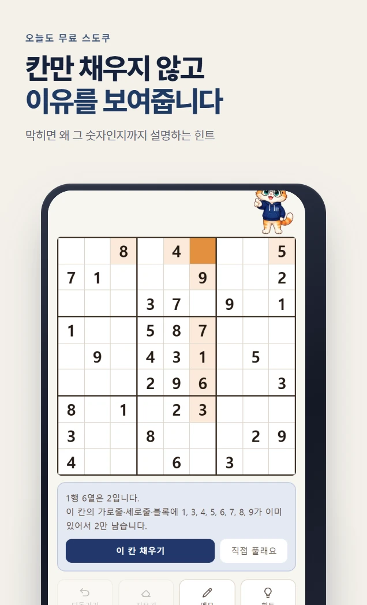

화면 둘러보기
앱 안은 이렇게 생겼습니다

옆으로 넘기세요
특징
잠깐의 여유를,
한 판의 몰입으로
오늘의 퍼즐을 고르거나 새 판을 시작하세요. 막히는 곳에서는 힌트의 도움을 받을 수 있습니다.
- 오늘
오늘의 퍼즐
매일 새로운 퍼즐을 만납니다.
- 선택
내게 맞는 난이도
익숙한 난이도로 시작하고, 조금 더 어려운 판에 도전해 보세요.
- 이어하기
풀던 판 그대로
잠깐 멈췄다가 돌아와도 진행하던 판을 이어갑니다.
서비스 플랫폼
토스와 원스토어에서
만날 수 있습니다
- 토스
서비스 중
토스 앱에서 오늘도 무료 스도쿠를 검색하거나 아래 버튼을 누르세요.
- 원스토어
서비스 중
안드로이드에서 원스토어 상세 페이지를 열어 설치할 수 있습니다.
알아둘 것
먼저 말씀드립니다
- 공식 서비스 플랫폼에서 이용해 주세요. 이 홈페이지에서는 브라우저 플레이와 테스트 버전을 제공하지 않습니다.
- 진행 기록은 이용한 기기에 저장됩니다. 앱 데이터 삭제 전에 기록 보관 여부를 확인해 주세요.
- 광고로 이용하는 기능의 조건은 각 서비스 화면에서 확인할 수 있습니다.
다른 앱